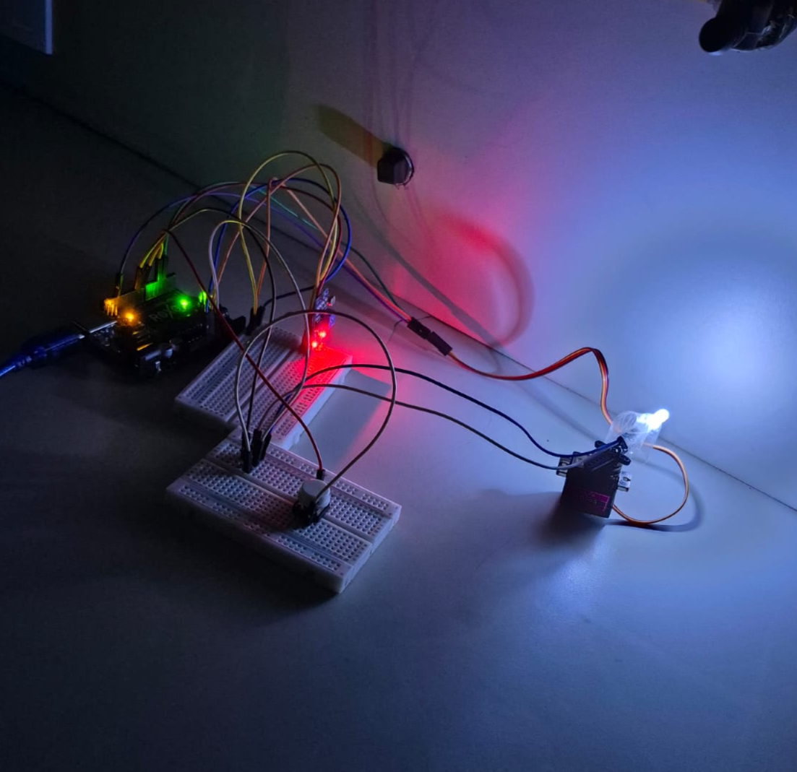

.png)
Quais são os três princípios fundamentais da óptica geométrica?
Propagação retilínea, independência dos raios e reversibilidade dos raios.
Quais são os três princípios fundamentais da óptica geométrica?
Propagação retilínea, independência dos raios e reversibilidade dos raios.
.png)
Qual é a regra principal da reflexão da luz?
O ângulo de incidência é sempre igual ao ângulo de reflexão (i = r).
.png)
Qual fenômeno da luz está descrito na imagem?
Propagação retilínea: a luz se propaga em linha reta em meios homogêneos.
.png)
Qual a diferença de imagem entre espelho convexo e côncavo?
Convexo gera imagem menor e virtual. Côncavo varia com a distância.
.png)
O que é refração da luz?
É a mudança de velocidade e direção da luz ao passar de um meio para outro.
.png)
Qual a diferença entre lente convergente e divergente?
Convergente junta os raios de luz; divergente espalha os raios.
.png)
O que é miopia e qual lente a corrige?
Imagem formada antes da retina; corrigida com lente divergente.
Qual o conceito demonstrado no Experimento de Young com laser e fendas?
A natureza ondulatória da luz. A fenda simples demonstra a difração (curvamento da luz) e a fenda dupla demonstra a interferência (padrão de franjas claras e escuras).

Qual o conceito analisado na varredura angular do LED com o LDR?
A distribuição angular da intensidade luminosa, medindo como a luminosidade varia em função do ângulo de iluminação em uma varredura de 0 a 180 graus.

Qual o conceito do projeto do sensor MQ-2 com alarme sonoro?
Acessibilidade e inclusão. O projeto combina o sinal visual dos LEDs com o aviso sonoro do buzzer, garantindo que deficientes visuais também percebam o alarme de perigo.